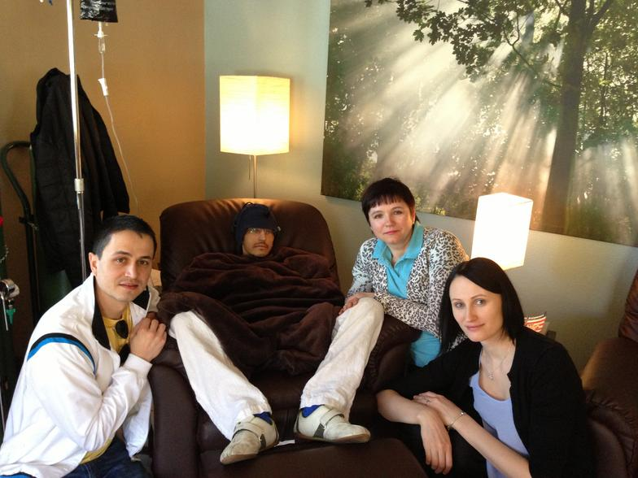
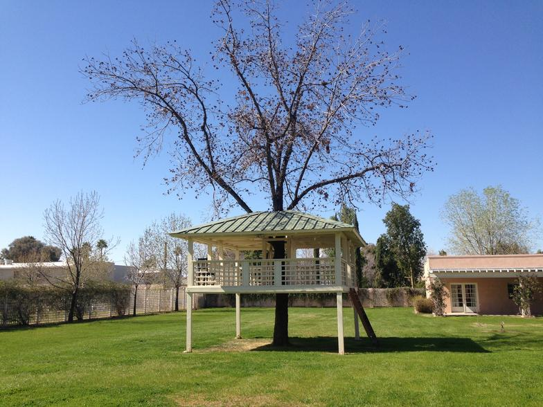
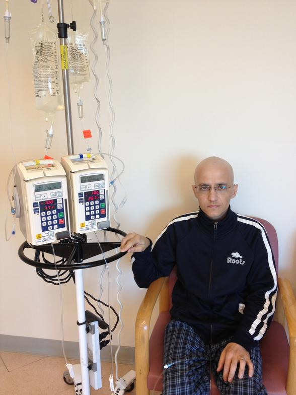

Михаил Заплишный |
| Welcome Hello, I’ve been living in the hospital since November 2012, and my second cancer is far more aggressive and unpleasant than the first one. My case is very unique because my chromosomes have around 12 abnormalities and I have already done two chemotherapies for AML. My second chemo was 8 times more powerful than the first one and nearly killed me while I was going through it. At this point my chemotherapy has ended and unfortunately leukemia has returned. Doctors have told me that I only have months to live and that there is nothing else they can do for me. My wife and I have decided to look for other treatments and we have found an alternative way in Mesa, Arizona ("Oasis of Healing"). Since it is located in US and it's not covered by our insurance we would have to pay out of our pocket for all the treatments. From what we understand, we will be staying there for up to 12 weeks. We are asking for your donations in order for me to survive and be able to pay for all the expenses. Please click here to donate. Below you can read my life story. My name is Mikhail and up until recently I was no different than you. I was living a normal adult life, newly married, just bought a house, job 9-5 pm and occasional entertainment. My life was turned upside down when I was rushed into an Emergency in October of 2011. You never anticipate the worst when things are good in life. In my life tragedy striked in November 2011, when I was diagnosed with germ cell testicular cancer. I was only 34 at that time and thought that my life was over. World came down crumbling upon me, but I had no choice but to stand up to the challenge. Due to the fact that this tumor lived in my chest and was a size of an orange, I had to undergo a very serious surgery right after my chemotherapy. At that time my chances were very low, but I have survived and was on my way to the recovery. I lived happily for eight months afterwards. I resumed my working activities, started going to the gym and being more active. In August of 2012 my energy level has gone down to the point where I couldn’t even get off a couch and simple tasks became challenges for me. I was also having some problems with my stomach and I was redirected to a Tropical Disease Clinic. It was then that I have learned that it was best if I was transferred to a hematology clinic in the Princess Margaret Hospital. My doctor collected a bone marrow biopsy, which later determined that I have acute myeloid leukemia (AML). I’m sure you can imagine my state of mind at this point. I have completed 2 sets of chemotherapies for this cancer and nothing has worked, my disease has returned. As you have read above, I am going to Arizona for an alternative treatment. I want to thank all my family and friends for their ongoing support. I will post updates on my situation here. Mikhail |
| News about Mikhail: UPDATE: I'm very sorry to inform all of you that Mikhail Zaplishnyy has passed away on February 25th 4:30 am (Arizona time) at the age of 36. He was fighting till the last minute, but he had 3 different infections in addition to his previous illness. He had a whole blood infection, which was too much for his already fragile body. I let him die in peace and without pain. There are no words that can describe how wonderful Mikhail was as a person. He is very special person to some many people and I know we all are going to miss him greatly!!! He will always be in our hearts. Thanks to everyone for their help and prayers, Mikhail is now in heaven! |
|
Week 1 |
| We have arrived to Mesa, Arizona on Wednesday night. Event hough the flight was lengthy, Mikhail was able to tolerate it quite well ( no bleeding at all). We sure loved to see lots of palm trees and warm weather. You can see above (middle picture) is our first day at the Oasis of Healing. We are currently waiting for them to develop a plan of action so that they can start the treatment. Mikhail has already received his first dose of Vitamin C and that helped with his energy levels. At the top right is the picture made on friday at the Centre (Hawaiian Day ). We have already moved into our apartment at the Fiesta Village (960 W Southern Ave., apt. C 171, Mesa, AZ, 85210). There are a lot of changes on the way, one of the biggest is switching to a raw vegan diet (that will take a lot of will power). Mikhail will begin his treatment starting this Monday (Feb. 11) and we are praying that it will work. |
|
Week 2 Street view of our clinic |
|
It has officially been a week since we have arrived. That also means that Mikhail has been RAW vegan for a week now. Oxana and I are trying our best to switch over but it is a very tough thing to do. The good news is that Mikhail lasted a whole week without getting a blood transfusion. The bad news is that on Tuesday ( Feb. 12 ) we had to go through an Emergency unit at the Banner Dessert Hospital in order to get a transfusion. Mikhail is truly a unique case because his red blood cells and platelets need to be specially matched. At first the doctor on call notified us that it will take hours to find him blood and 2-4 days to find him platelets. We were terrified to hear such news, especially after we found out that to stay at the hospital overnight it will cost us $5000 ( and thats just to stay there, its another $3100 for the transfusions). After hearing that, we just wanted to get out of the hospital. At this point we have already refused to get platelets. To make a long story short, we were blessed to hear that they found his red blood cells and it will only take 30 minutes till we get them. For all of you out there who are praying for us, thank you because we definitely feel those prayers working. For one thing is that the Hospital we were at was able to help us apply for a Financial Assistance Program that will cover a big percentage of our expenses. Overall, Mikhail is feeling relatively good. We even managed to explore the city a little and go shopping at the mall. He has more energy than before, he was able to walk in the mall for a good hour and a half without resting. Needless to say the whole journey here is very different and it tends to be emotionally challenging for both of us. As far as the treatment goes, Mikhail will be starting his low dose chemo on Saturday (Feb 16). So far he was receiving Vitamin C, B17, ARA and Neupogen. His platelets seems to be going up slowly, which is a good thing since he may not even need a transfusion for a while. The nurses and personnel here is great, everyone is super friendly. We are slowly are getting used to being here. |
|
Monday (Feb 18th) Today was Mikhail's 36th Birthday ! WOO-hoo :) We had a great pleasure of spending this day with his brother Vlad, Oxana and my mom (Lana) Since the last update I have told you that Mikhail will start his low dose chemo. At that moment his blast number (leukemia marker) was at 66% of his WBC (white blood cells). After he recieved his chemo he said that his fatigue level was decreased by 50%. That's amazing! Considering the fact that his platelets and red blood cells are holding up (which is great). Also, today we have learned that his blasts went down to 48%!!!!! And thats just after one treatment. I will try to post a little every day to keep you posted ( or I will try my best). Also, I will try to keep refreshing the photo gallery....SO keep on checking :)  |
Wednesday (Feb 20th)Just want to start off by saying thank you everyone for the birthday wishes/presents for Mikhail. Today was a very busy day for us. It started off with Mikhail getting his chemo in the morning and then we went for an appointment with an oncologist. From now on he will be registered as an out-patient (at the hospital), which means he can now get blood/platelet transfusions without going though emergency. Mikhail is pretty tired and he still gets fever once in a while (could be due to chemo). Mory and Deborah came to see us for a few days. It is very nice of them to come and cheer Mikhail up. We also went to Costco today to get a better price on VitaMix so we can at least start making our own food. Believe it or not but today we had hail!!! Its pretty cold out here right now, considering that two days ago you could go swimming outside. |
Sunday (Feb 24th)Since Friday (Feb 22) Mikhail was rushed to the emergency due to low blood sugar. He was lucky to not fall into a coma. Once we got to the hospital his blood sugar has dropped again, this time it was 6 (normal range is between 70-110). They were shocked that he was still awake! They later realized that he really needed a blood transfusion. We have decided that its best to hospitalize Mikhail. They have also found that he has infection in his blood. As of Saturday afternoon, Mikhail was having problems breathing ( I think he received too much fluids) and was transferred to ICU. They had to change his Hickman's line, so they put in a new line in his neck. Mikhail is doing better now, he is slowly stabilizing. At this point we really need your prayers! I'm hoping for a miracle. I'm also sick of hearing it from the doctors all the negative thoughts they have to share with me, it's too much. That's all I can write at this point. Thanks for your prayers! |
UPDATE:I'm very sorry to inform all of you that Mikhail Zaplishnyy has passed away on February 25th 4:30 am (Arizona time) at the age of 36.He was fighting till the last minute, but he had 3 different infections in addition to his previous illness. He had a whole blood infection, which was too much for his already fragile body. I let him die in peace and without pain. There are no words that can describe how wonderful Mikhail was as a person. He is very special person to some many people and I know we all are going to miss him greatly!!! He will always be in our hearts. Thanks to everyone for their help and prayers, Mikhail is now in heaven! |
|
Oxana driving us everywhere we needed to go Our house complex Mikhail walking :)  The backyard of the "Oasis of Healing" House Mikhail and I (Olga) Mikhail at the shopping mall Mikhail and his wife Olga Mikhail during AML treatment  |